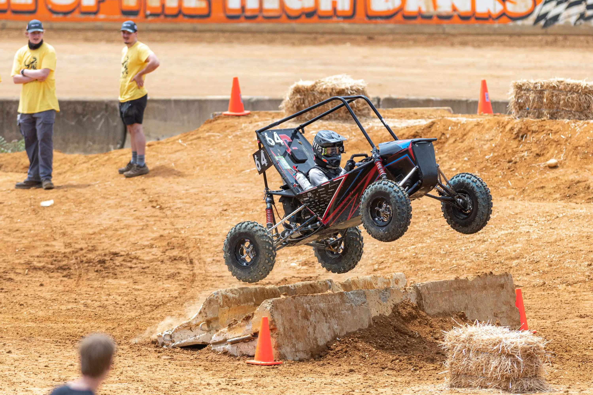
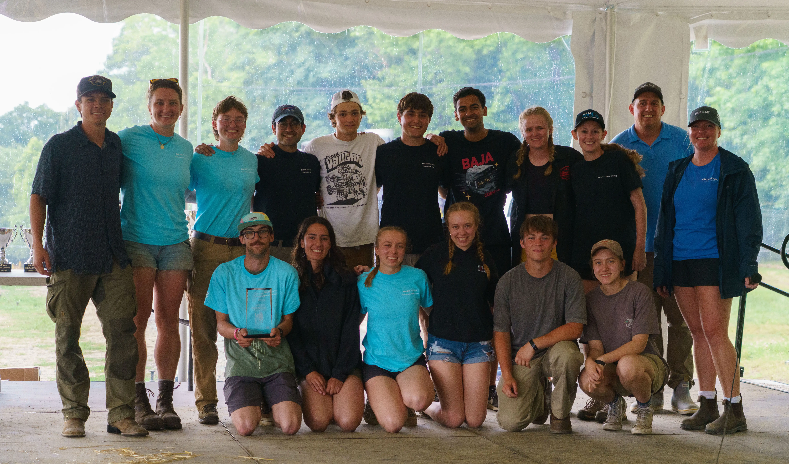
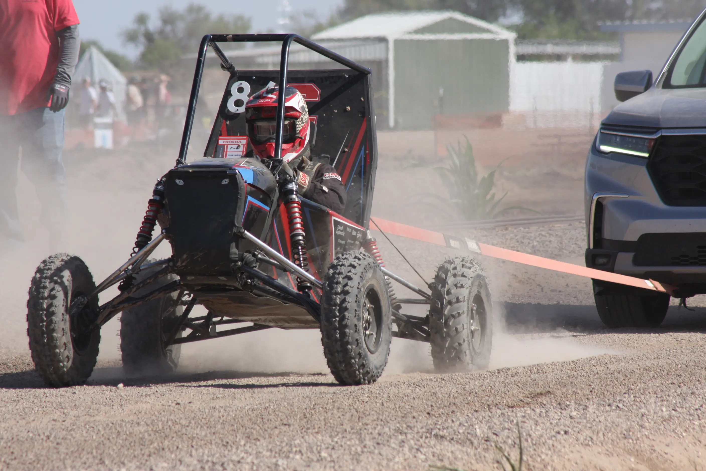

About the Competition
Baja SAE Racing at Cornell is an engineering project team which annually designs, builds and races an off-road vehicle to compete in the SAE Collegiate Baja Design Series. By encouraging hands-on engineering and project-based learning, Baja Racing at Cornell takes engineering out of the classroom (and onto the track) for 50+ students annually. Each year, our research moves through 3 stages of review before our design is finalized: Preliminary Review, Critical Review, and Final Review. During this time, we’re also modifying our older cars, so we can test new designs on prior years’ vehicles. Following our final review, we move to our build phase. Each year, we continue to innovate and improve—redesigning even the smallest components. We balance hard work with a passion for our car, and we think that passion really makes the difference. The competition requires students to balance design and cost with dynamic performance while following a strict set of safety guidelines and standardized rules. There are three North American competitions annually, each with over 100 competing teams. The competition is broken down into static and dynamic events.
Static Events
Static events include our design presentation, cost report, sales presentation, and technical inspection. On the first day of competition, we compete in our sales presentation, where teams compete by creating hypothetical scenarios of entering a commercial market, pitching the hypothetical scenario to a series of industry judges. On the first day, our car also undergoes judging via cost, and our car must also pass our technical inspection, where judges scrutinize every inch of the car to make sure that it meets all of the competition rules and specifications. The second day of competition is dedicated to the design aspect of competition, where teams are given the chance to explain to judges what separates their car from the rest, what testing was done to drive decisions, and to point out any other innovations.


Dynamic Events
Dynamic events take place on the third and fourth days of competition. The third day is exclusively for time trials, where each car competes individually. Each team races their car through a number of events including a maneuverability course, an acceleration track, a hill climb or tractor pull event, and a special event specified for each competition (often suspension and traction or rock crawl). The fourth day of competition is reserved for a four-hour endurance race, in which all participating teams are on the same track at once, racing wheel-to-wheel. The endurance race is the event worth the most points and makes designing and fabrication for durability paramount to success.